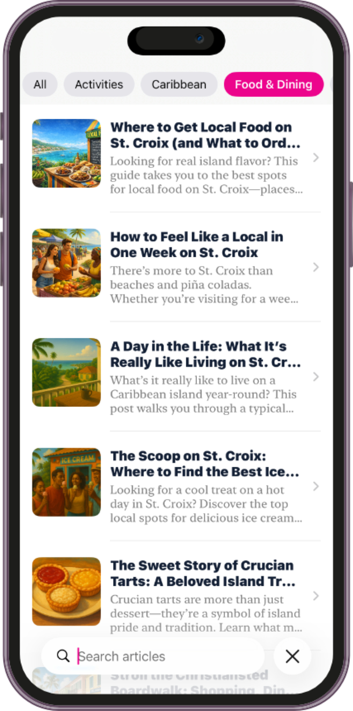
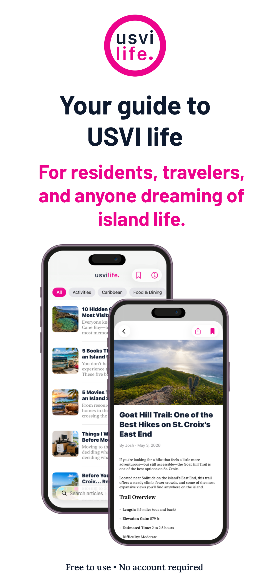
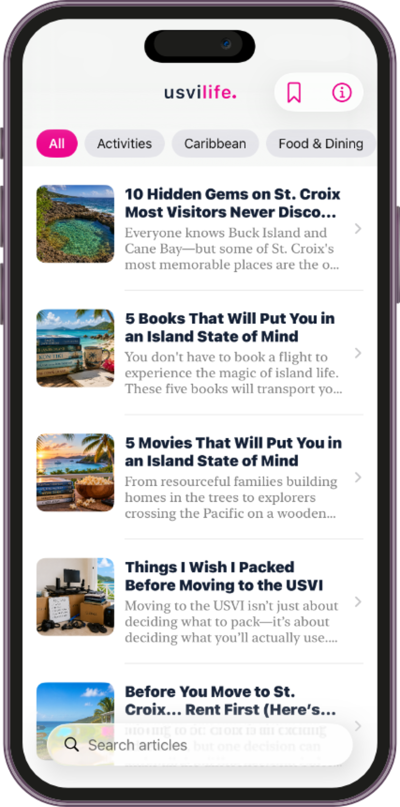
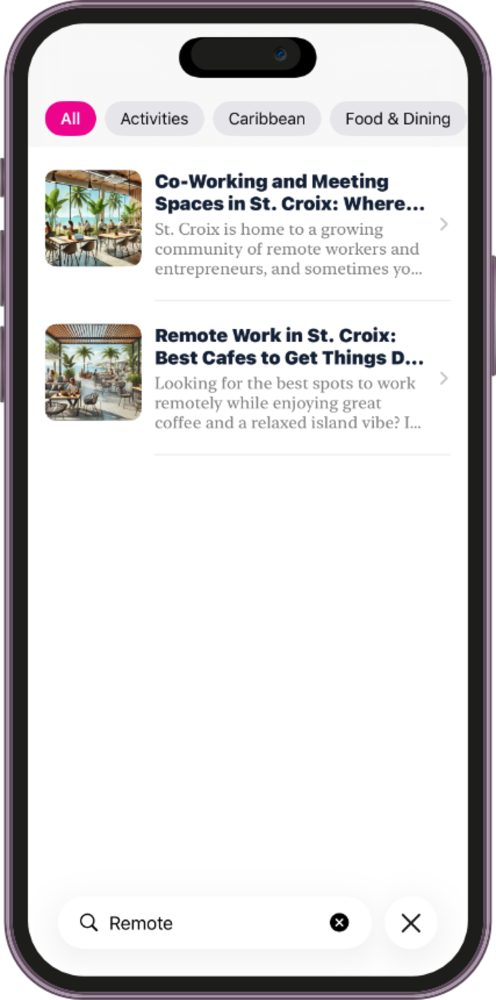
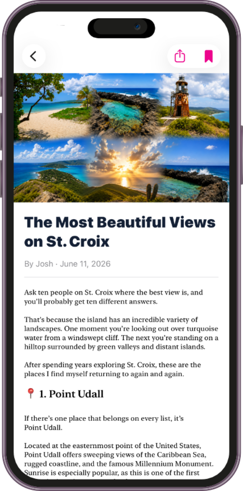
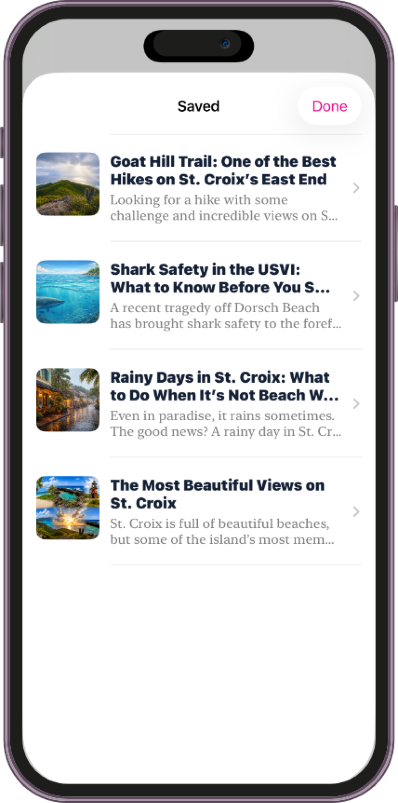
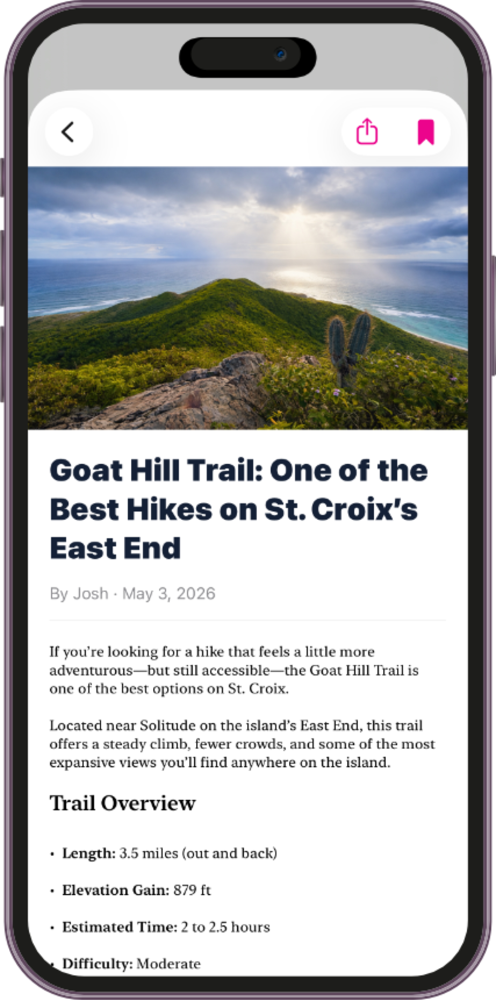

Browse by interest
Your kind of island day.
Move from food and culture to activities, Caribbean stories, and practical island living with a tap.

Authentic stories, practical guides, and local inspiration for residents, travelers, and anyone dreaming of island life.

Your islands, closer
From a favorite roadside stop to the trail locals recommend, USVI Life helps you find the places, people, and practical details that make the islands feel like home.
Open the app and find something worth reading, doing, tasting, or saving—without signing in or setting anything up.
Explore authentic stories and practical guides built around the rhythm of island life. Browse the latest or jump into the topics that matter to you.

Move from food and culture to activities, Caribbean stories, and practical island living with a tap.

Search local favorites, practical advice, and island guides when a question comes up.

Useful stories rooted in real island life, not generic travel lists.
Search practical advice, local favorites, and island guides in seconds.
Save the pieces you love and keep them handy for offline reading.
Save an article once. Come back to it from your personal library—even when the ferry, trail, or beach has other ideas about your signal.



Discover local traditions, tucked-away places, everyday island routines, and stories that make the USVI more than a beautiful backdrop.
“The kind of useful local knowledge you usually only get after living here.”
No profiles to complete. No feed to train. Just useful island knowledge when you want it.
Start with the latest stories or choose a category that fits your day.
Find a practical answer, local favorite, hidden gem, or a little inspiration.
Keep favorites in your library for easy access, including offline.
USVI Life is free, private by design, and ready whenever island inspiration strikes.
Yes. USVI Life is free to use, with no account required to browse, search, save stories, or explore local guides.
It is designed for residents, travelers, new arrivals, and anyone who wants a more authentic connection to life in the U.S. Virgin Islands.
Yes. Save a story to your library and it remains ready when your signal is not.
Expect practical island guides, food and culture, activities, local traditions, hidden gems, and thoughtful stories about everyday life in the USVI.
No. Open the app and start exploring. Your saved library stays on your device.
Yes. Add the USVI Life widget to see the latest story right from your iPhone Home Screen.